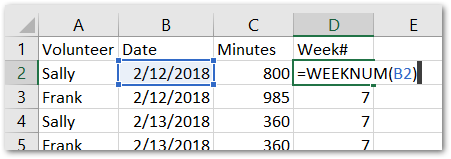
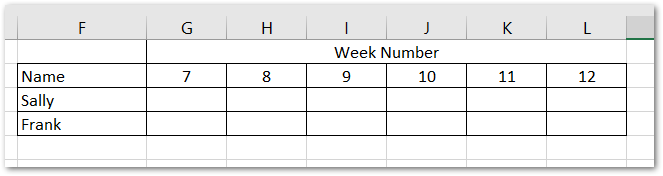
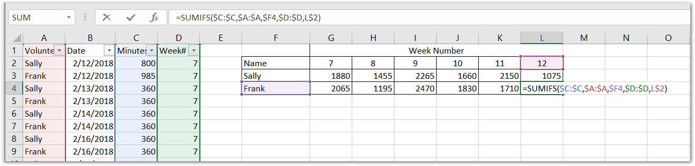
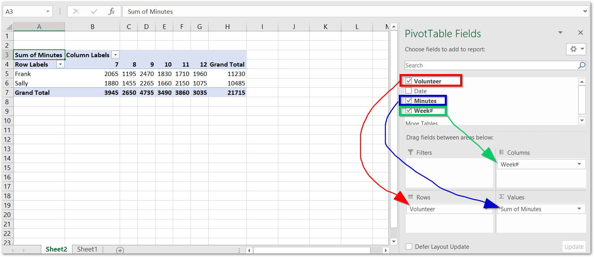
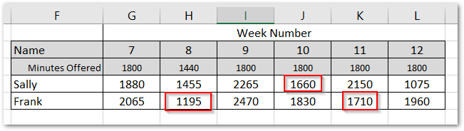
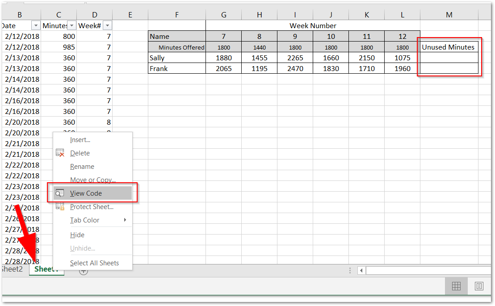
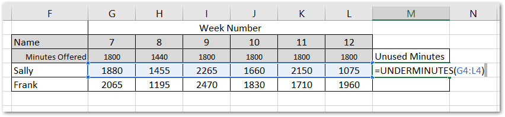
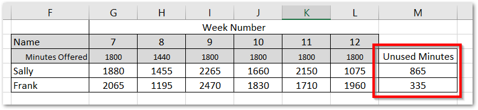

In a previous tutorial we showed how to track weekly attendance data for volunteers in our non-profit agency using Python and the pandas library. In this tutorial, we're going to accomplish a similar task but with a little more flexibility and only using Excel.
In this scenario, we're going to pretend that our agency gets reimbursed for every hour that every volunteer works. Our agency offers 30 hours/week to each volunteer, so it's ideal if each volunteer gives 30 hours every week so that our funder will reimburse us for the maximum amount possible. When you recruit volunteers, you ask for a 30/hr week committment. But since life gets in the way and some volunteers don't meet that committment, we want to be able to track this and equate missed volunteer hours with missed revenue—an opporunity cost, if you will.
Our data structure is below. Each row contains the volunteers name, the date they volunteered, and the total minutes they volunteered on that date. This data structure is common output of databases or web applications.
Weekly Totals
Our first task is going to be to add a helper column to add the weeknumber for each row. This is a simple formula =WEEKNUM(B2)

We need our data to now be alinged where each row is the name of the individual, and each column header is the week number, and where they intersect is the total of minutes for that week number. We're going to accomplish this two ways. The first is with a =SUMIFS() formula, and the other—and much easier way—with a pivot table.
OPTION 1 - Sumifs
Manually create a table of data so that it looks like this:

In cell G3 enter the formula =SUMIFS($C:$C,$A:$A,$F3,$D:$D,G$2). This formula will sum the Minutes column if the data ranges contains both the name of the volunteer and the week number. Copy the formula over to the right and down and double check to make sure it has worked as expected.

OPTION 2 - Pivot Table
Our dataset is so small here that formulas in this range (even for an entire year) would suffice with minial performance issues. But if our data contains hundreds or thousands of volunteers, Excel and your computer may have a hard time handling thousands or tens of thousands of cells with formulas. Pivot tables are the perfect solution for this.
Make sure you have any cell selected of the original dataset, then click Insert in the menu, and select Pivot Table. A dialog box will appear giving you some options—just click OK for the default selections.
Excel will create the pivot table in a new worksheet by default and a cell will already be selected. With the pivot table selected, we're just going to do three things.
- Drag and drop
Volunteerin the Rows section. - Drag and drop
Minutesin the Values section. - Drag and drop
Week#in the Columns section.
Excel is smart enough to know that you probably want a sum of those minutes, so it is the default action. At this point, check to make sure our pivot table totals match our sumifs totals.

Copy and paste the data out of this pivot table and into a different worksheet to make it appear like the example above.
Hours Offered
Our agency operates Monday through Friday. Our volunteers can give their time at any point during the week except on holidays. So we don't want to hold that against our volunteers and skew our numbers, so we're going to add a row to our data that indicates how many hours/minutes of volunteer time were offered in that week.
Let's add that row along with the minutes we offered in that week. Now, it's easy to see which volunteer fell short in each week. In week number 8, Frank only volunteered 1195 minutes of an available 1440. This is 245 minutes of reimbursement that the agency will not get:

And now, how do we get a total of all unused time for every volunteer? Enter custom functions...
Custom Function
A custom function in Excel allows us to use the Visual Basic for Applications programming language. We'll use a custom function just like we would use a formula in our spreadsheet like =SUM(C2:C10).
Let's first add a "Unused Minutes" column. Then right-click on the worksheet tab and click "View Code."

In the menu that appears, click Insert > Module and copy and paste the following into the editing area.
Function UNDERMINUTES(rng As Range)
Total = 0
For Each cell In rng
' Check if the cell is less than the minutes offered
' Adjust "cell.Row + 3" depending on what row your "Minutes Offered" is.
If cell.Value < Cells(cell.Row - cell.Row + 3, cell.Column).Value Then
' Subtract minutes offered from cell(used), increment Total
Total = Total + Cells(cell.Row - cell.Row + 3, cell.Column).Value - cell.Value
End If
Next
UNDERMINUTES = Total
End Function
Close out that code editing window to get back to our spreadsheet. In the unused minutes column, enter our custom function into the cell just like you would a formula: =UNDERMINUTES(G4:L4) and copy that formula down to the next row.

Now we have a total unused minutes column. Verify that our function is working as expected by manually checking before applying this to a larger dataset. Now that we've included VBA in our Excel file, we must save it as Macro enabled workbook (.xlsm).

Considerations
- If Sally is on vacation for an entire week, you may not want to include that in the unused calculation. In the function, you would just check to see if the cell is blank first, and if yes, skip to the next cell.
- Similarly, be cautious with your dataset and how many weeks at a time you want to run this report. If a new volunteer joined your agency at week 9, the UNDERMINUTES calculation will include the first two weeks as unused minutes for that new volunteer, even though they didn't even start volunteering yet.
Comments
comments powered by Disqus